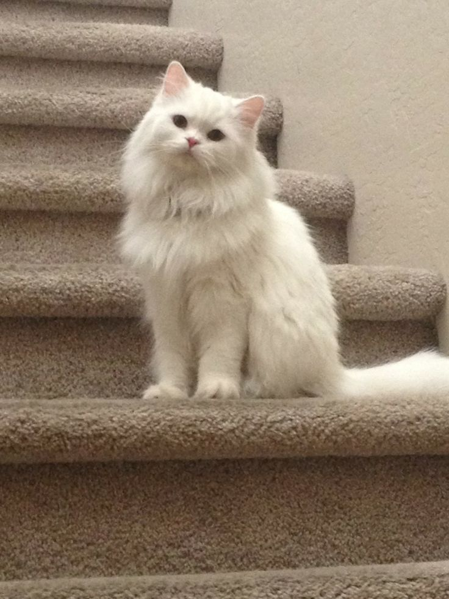
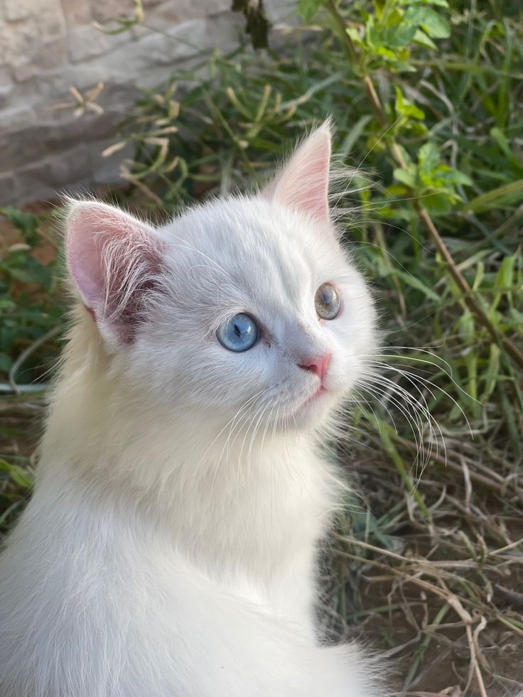
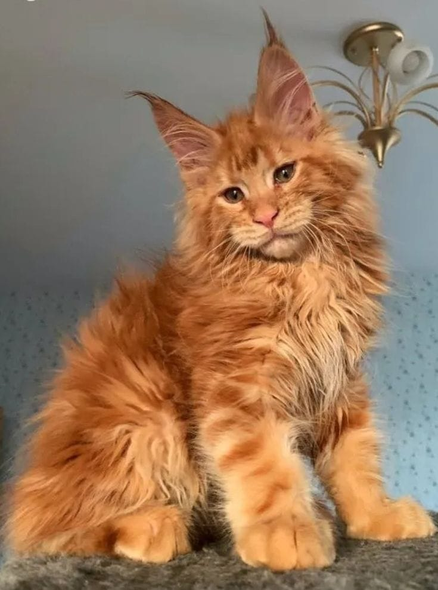
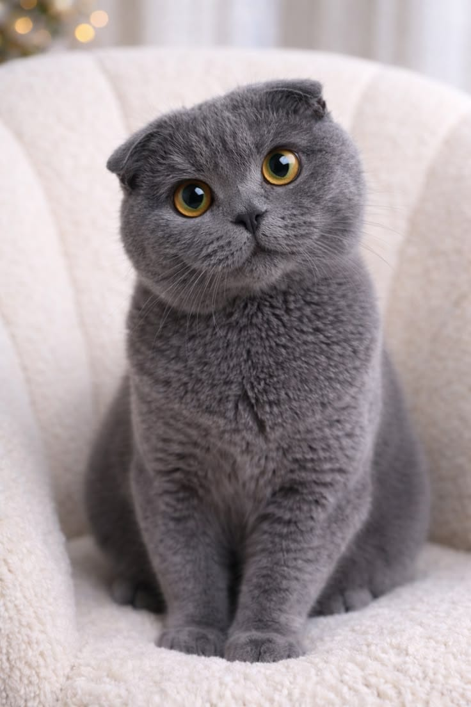
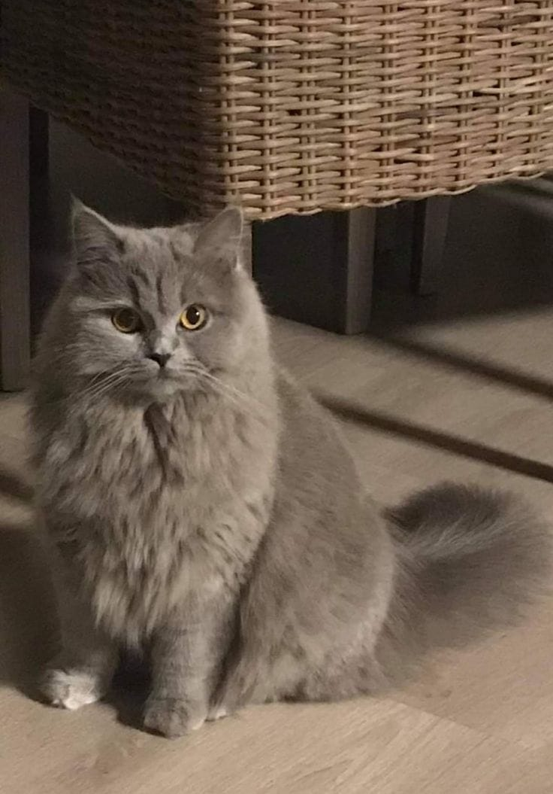
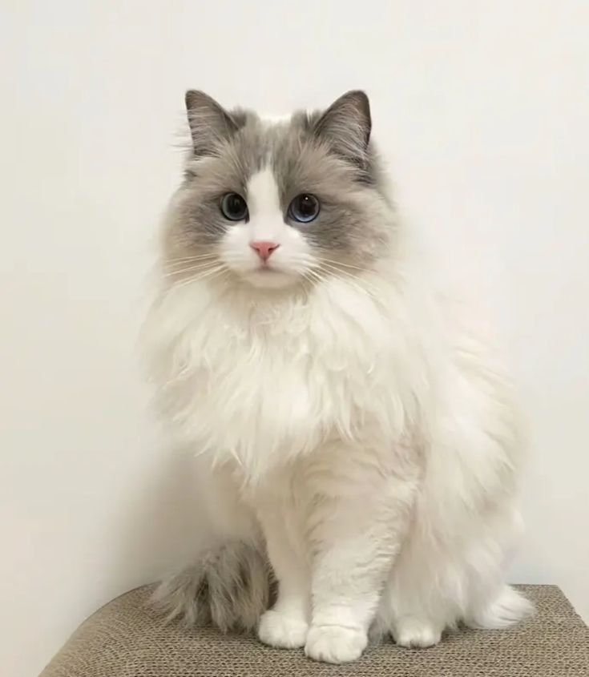

Persian Cat
معروفة بفرائها الكثيف والناعم ووجهها المستدير. هادئة ولطيفة وتحب الاسترخاء داخل المنزل.
المنشأ: إيران
Siamese Cat
تتميز بعيون زرقاء لافتة ونقاط داكنة على الأذنين والوجه. اجتماعية جداً وتحب التفاعل بصوتها المميز.
المنشأ: تايلاند
Maine Coon Cat
واحدة من أكبر سلالات القطط المستأنسة حجمًا. ذكية ونشيطة وتتمتع بفرائها المهيأ للمناخ البارد.
المنشأ: الولايات المتحدة
Scottish Fold Cat
طفرة طبيعية جعلت آذانها مطوية للأمام بشكل محبب. فضولية وتحب الوقوف على قدميها لمراقبة البيئة المحيطة.
المنشأ: اسكتلندا
Abyssinian Cat
تتميز بفراء مدبوغ قصير ورقيق وجسم ممشوق. نشطة جداً وتحب استكشاف الأماكن المرتفعة.
المنشأ: إثيوبيا
Ragdoll Cat
تمتلك عيوناً زرقاء وفراء فاتحاً بنقاط أغمق. تتميز بهدوئها الشديد وحبها للاسترخاء بين يدي صاحبها.
المنشأ: الولايات المتحدة